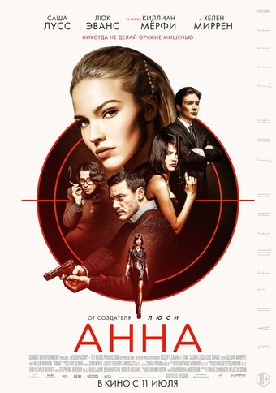

<!DOCTUPE html>
<html>
   <head>
   <!--
   это коментарий.далее идет заголовак страницы.
   -->
   <title> Заголовок страницы </title>
   </head>
<body>
</body>
</html>
<hl>Анна</hl>
 <br>

 
 <br><br><br><br><br><br><br><br><br><br><br><br><br><br><br><br><br><br><br><br>
 
 Сюжет
1987 год, Москва.
 Бедная девушка-наркоманка 
 Аня Полятова (Саша Лусс) сожительствует 
 со своим бойфрендом-наркоманом Петром (Александр Петров).
 В поисках выхода Аня решает завербоваться в ряды ВМФ СССР. Она 
 открывает свой лэптоп, заходит на сайт Советского ВМФ и начинает заполнять 
 стандартную форму, ссылаясь на то, что в детстве училась в военной академии в Омске.
 Однако Петр против и обещает лучшую жизнь, в конечном итоге, он пытается ограбить со
 своими дружками банкомат (первый в стране) и этому мешает внезапный приезд милиции. Через
 буквально короткое время спустя Аня имеет беседу с вербовщиком КГБ Алексом Ченковым (Люк Эванс),
 который предлагает ей послужить своей стране и становится другом и куратором.
В ролях
Саша Лусс — Анна Полятова[2]
Хелен Миррен — Ольга
Люк Эванс — Алекс Ченков, куратор КГБ
Киллиан Мёрфи — Ленни Миллер, начальник советского отдела ЦРУ
Александр Петров — Петр[3]
Анна Криппа — Ника
Никита Павленко — Влад
Алексей Маслодудов — Джимми
Эрик Годон — Васильев, начальник КГБ
Иван Франек — Моссан
Михаил Сафронов — отец Анны
Эдуард Флёров — Моли
Мария Лусс — мать Анны
Производство
9 октября 2017 года было объявлено, что новый фильм Люка Бессона будет называться «Анна», и в нём сыграют Саша Лусс, Хелен Миррен, Люк Эванс и Киллиан Мерфи. Производством фильма занялась компания EuropaCorp, а дистрибьютором выступила студия Lionsgate[2].

Съёмки фильма начались в начале ноября 2017 года[1][4].
</body>
</html>